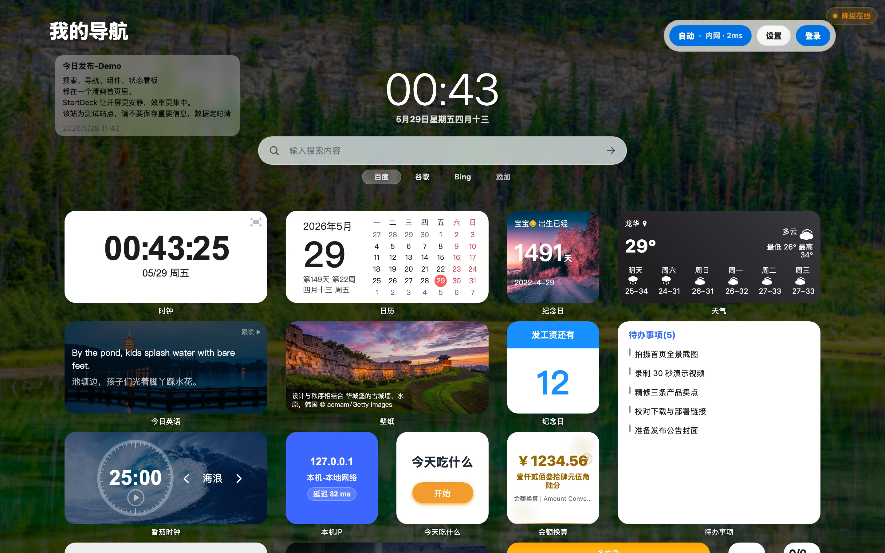

分散之后，每次打开都要重新找。
- 服务入口散落在浏览器收藏夹、备忘录和群晖面板里。
- 公网地址、内网地址、反代地址需要人工判断。
- Docker、系统资源、AI 额度和研发状态不在同一屏。
- 站点图标、标题和描述需要重复手动补齐。
把 NAS、内网服务、Docker 状态、AI 使用量和每天会用到的链接，整理成浏览器打开后的第一屏。真实运行、自己部署、数据留在本地。

家庭服务器和 NAS 的日常问题通常不是没有服务，而是入口、地址、状态和工具被拆散在很多地方。StartDeck 把它们收进一个可维护的页面。
搜索、打开服务、查看状态、切换网络入口和进入组件工作流都发生在首页。下面仍然使用当前项目真实截图。
搜索引擎、站点卡片和分组入口并列出现，减少来回跳转。
天气、日历、待办、AI 额度和研发状态作为信息层常驻首页。
同一个服务维护公网和内网访问方式，适配家庭、公司和公网访问。
站点标题、描述、图标、上传图标和背景色由图标服务统一补齐。
组件以真实尺寸进入首页：小组件负责关键状态，打开态负责详细操作。这里展示当前版本的真实渲染片段。
StartDeck 的服务器能力不是“另一个后台页面”，而是把常看的运行状态收进首页：容器、CPU、内存、磁盘、IP、图标缓存和代理链路。
系统状态组件用于查看 CPU、内存、磁盘等基础资源；Docker 组件用于查看容器状态，并执行启动、停止、重启和镜像更新等动作。
负责首页、组件运行态、设置、搜索、拖拽和响应式展示。
提供认证、配置、Docker、代理、天气、IP 与站点元数据接口。
独立处理内置图标库、站点图标识别、缓存和标题描述补齐。
布局、书签、组件配置和运行资源保存在自己的服务器上。
StartDeck 保留自托管项目该有的扩展入口：全局自定义 CSS、全局自定义 JS、自定义组件、iframe、后端代理和上传资源管理。
<div class="service-panel">
<h3>家庭服务器</h3>
<p>当前在线服务：12</p>
<button data-action="refresh">刷新状态</button>
</div>
.service-panel {
height: 100%;
display: grid;
align-content: center;
gap: 8px;
}
ctx.proxy("/api/custom/status").then(updatePanel);默认 Web 入口为 9001，图标服务为 9002。Docker 镜像内同时启动主服务与图标服务；Debian/Ubuntu 脚本适合非容器部署。
docker run -d \
--name startdeck \
--restart unless-stopped \
-p 9001:9001 \
-v $(pwd)/Data/data:/app/Data/data \
-v $(pwd)/Data/PC:/app/Data/PC \
-v $(pwd)/Data/APP:/app/Data/APP \
-v $(pwd)/icon-service-data:/app/icon-service/data \
-v /var/run/docker.sock:/var/run/docker.sock \
-e PORT=9001 \
-e STARTDECK_ADMIN_PASSWORD=change-me \
-e ICON_SERVICE_PORT=9002 \
-e ICON_SERVICE_DATA_DIR=/app/icon-service/data \
-e ICON_SERVER_BASE_URL=http://127.0.0.1:9002 \
apkdv/startdeck:latestwget -O deploy_debian.sh \
https://raw.githubusercontent.com/appdev/StartDeck/main/deploy_debian.sh
chmod +x deploy_debian.sh
sudo ./deploy_debian.shStartDeck 适合 NAS、家庭服务器、开发环境和长期维护个人入口的用户。开源、自托管、数据在本地，部署后访问浏览器第一屏即可开始使用。